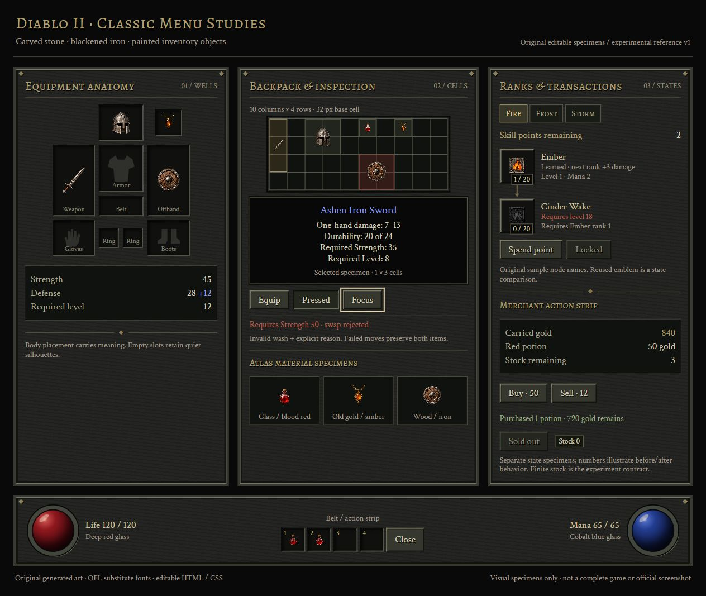

Game UI
Game UIDIABLO II-INSPIRED / V1.0.0
暗黑 II 的视觉语言，
交给你的 AI。
深色石雕、旧金属边框、红蓝资源球与多格装备背包。
同一套参考包，生成装备背包、技能树、交易三个界面。
实验性参考包 · 22 个文件 · 本地 Web 样例 · 非官方风格研究

包内组件样品 打开查看 ↗01 / INDEPENDENT AI OUTPUT
装备背包、技能树、交易，共用一套规则。
新代理只获得冻结的 Skill 包、界面需求与输出位置，没有获得成品模板。截图来自实际浏览器；每屏的功能与检查范围见验证记录。
02 / WHAT YOUR AI READS
图、组件与规则，在同一个包里。

03 / TRY WITH YOUR AGENT
解压，然后让 AI 先看参考。
保留解压后的完整目录，把 SKILL.md 的本地路径交给支持文件读取的 AI；也可以放进你的 Agent 支持的 Skills 目录。参考图片用于指导，交互文字与数值应继续保持可编辑。
阅读入口规则 ↗可改用的需求
使用 diablo-ii-ui Skill。先读取 SKILL.md、视觉规则和状态约定，查看参考图、组件板与图集。 制作一个装备背包：展示装备位置、可选择的物品格、当前角色属性和装备替换。 使用 HTML/CSS/JS，保留可编辑的文字和数值。复用本地素材，完成后实际渲染并检查。
04 / EVIDENCE AND LIMITS
看制作结果，也看检查记录。
这是同模型独立代理的一轮 Web 实验，未验证跨模型稳定性、游戏引擎导出或 Figma 编辑文件。包内方向图与运行素材由 AI 生成；代码、字体和素材随包提供。不含官方游戏提取素材。原游戏名称仅标识参考方向，字体许可随包保留。